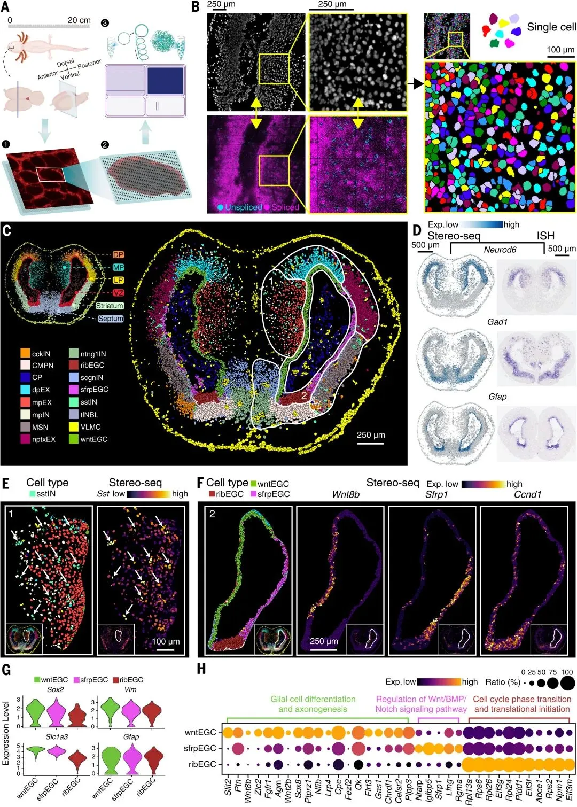
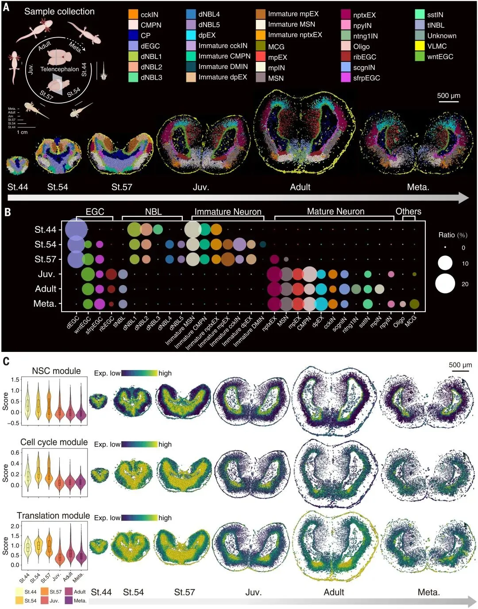
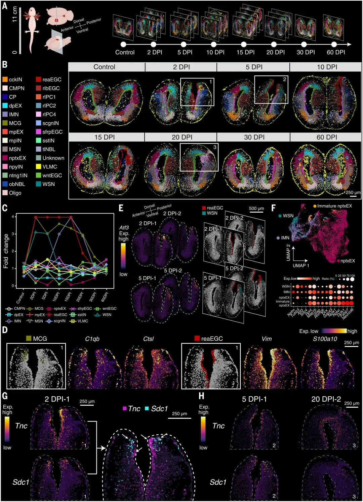
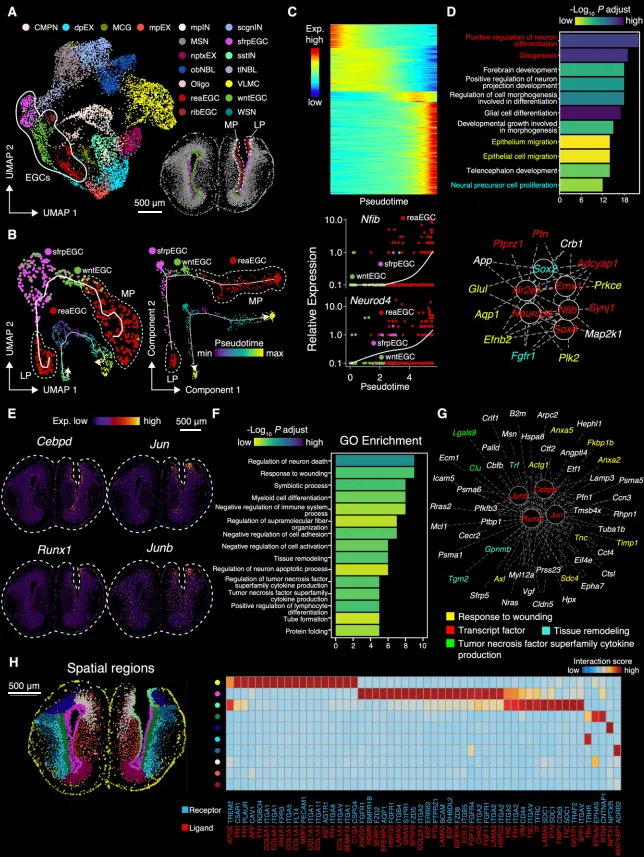
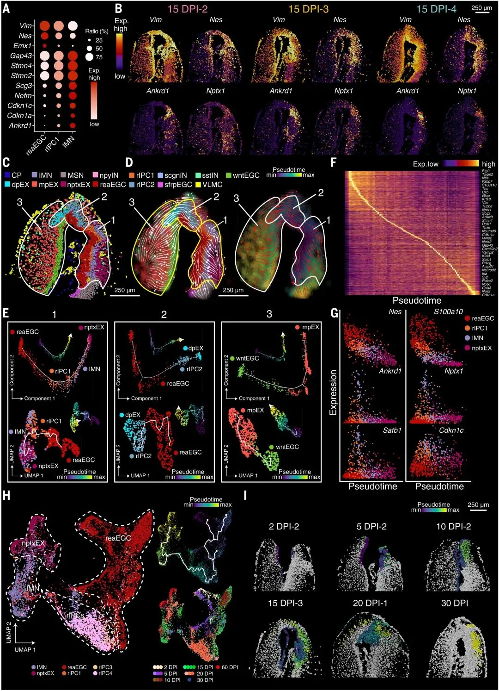
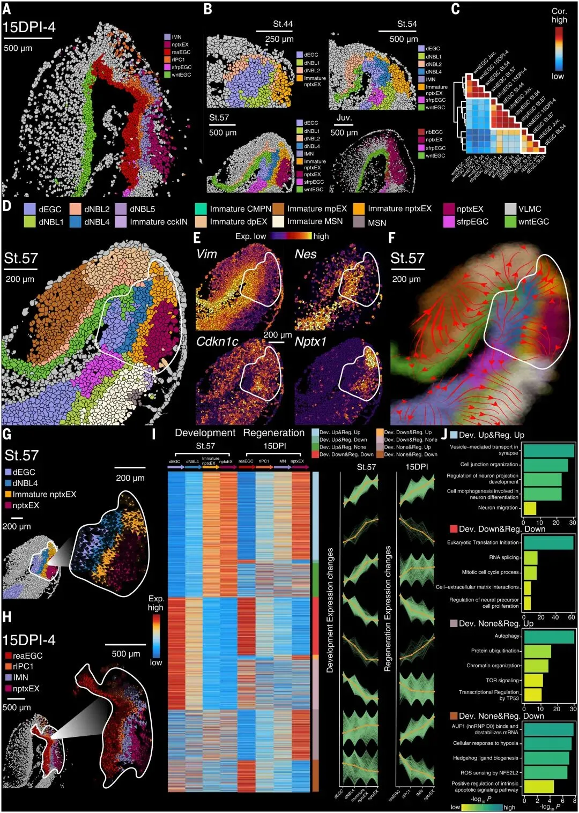

长脑子了!时空转录组揭示大脑再生机制
原文：https://mp.weixin.qq.com/s?__biz=MzAwMzIzOTk5OQ==&mid=2247498650&idx=1&sn=6321c00467e4c339c48080ef2c816178&chksm=9b3c82caac4b0bdc1bebbc8a77d40073d6d82792c02272bc639391483e3d7dfd671237028555#rd 合集：空间转录组 / 文献速递
写在前面
最近有从事空间转录组相关研究的想法，还是老规矩，先读几篇文献，今天分享的这篇是由华大基因于2022年发表在《Science》上揭示蝾螈脑损伤后再生过程的空间转录组文献。值得一提的是，文章用到的spatial enhanced resolution omics sequence (stereo-seq)是由华大自主研发的技术，其高分辨率 、大视野 的优势使其在空间转录组的领域内风头一时无两。多达数十个样本的stereo-seq数据对于该领域想做数据挖掘 的同学来说向来也是天上掉下的馅饼。作者也很贴心地把所有数据以可交互的形式发布为一个在线的数据库页面(https://db.cngb.org/stomics/artista/)。
研究内容及结果
大脑的再生是一个具有高度时间与空间特异性的过程，其间的细胞与分子机制仍待进一步的探究。蝾螈(Ambystoma mexicanum)是一种再生能力很强的生物，因此作者移除了蝾螈侧面大脑皮层的一部分组织并比对其再生过程与正常小脑发育过程中的异同。发现其中的室管膜胶质细胞(ependymoglial cells,EGCs)能够附着于创口表面，并具有发育分化为成熟神经元的能力。具体看一下结果，作者经过stereo-seq，获得了蝾螈端脑中ventricular zone(VZ), dorsal palium, medial pallium, lateral pallium, striatum和septum共六个区域 的细胞(Figure 1-C)。通过一些marker(例如：excitatory neuron, Neurod6 ；inhibitory neuron, Gad1 ; ependymoglial cells, Gfap)对非监督式聚类获得的16个clusters 进行细胞类型注释，并通过RNA原位杂交进行验证(Figure 1C-D)。为了防止stereo-seq建库过程中发生RNA的扩散效应，通过观察Sst可以发现这一基因在对应细胞范围外表达量锐减(Figure 1E)，可初步证明弥散效应对细胞注释并无显著影响 。对EGCs进行亚群分析后初步获得了wntEGC, sfrpEGC, ribEGC 三个亚群(Figure 1F-G)，且ribEGC中细胞循环及转录相关基因表达量较高，这部分细胞可能处于增殖状态 中(Figure 1H)。

Figure1
关于组间的对比分析，作者先对脑发育中的stage44、stage54、stage57、青少年期、成年期、变态期的前脑进行观察，共获得了33种细胞类型( Figure 2A-B)，这远高于Figure1中端脑所呈现的。中的16种细胞类型。其中一种EGC的亚型在stage44时于VZ中出现，在stage54时减少且在青少年期消失，同时这种细胞表达 Fzd7 和 Sox1 这样的发育型marker因而被命名为developmental EGC (dEGC)。不成熟的神经元细胞与dEGC伴随出现并消失(Figure 1B)，二者可能存在一定转化关系 。在基因集打分中也可以明显发现，神经元干性(NSC)，细胞周期、转录相关的基因集均在发育期stage44、54、57中得分较高，而在青少年期、成年期、变态期得分较低(Figure 1C)。

Figure2 作者的目的是揭示蝾螈脑再生过程中的分子机制，因此其移除了蝾螈端脑左半球大脑皮层的一部分(0.5mmX0.5mm的切口)，并对60天损伤后恢复期(days post-injury)的样本进行了stereo-seq(Figure 3A)。这批数据中共获得了28种细胞类型(Figure 4B)，从stereo-seq数据可观察到大约在30DPI时候创口在形态学层面愈合，在60DPI时细胞类型分布也完全恢复(Figure B-C)。在其期间作者同样发现了一种较为特殊的EGC亚型，这类细胞可以表达神经胶质细胞的marker— Vim(Figure 3D)，作者将其称为reactive EGCs(reaEGCs)。在拟时序分析的拟时间及表达矩阵变化中可发现reaEGCs可能由wntEGCs、sfrpEGCs演化而来(Figure S11 A-C)。而15DPI时immature neurons(IMNs)达到峰值而reaEGCs含量开始下降。且reaEGCs在转录因子预测与WGCNA分析中均可发现大量与胶质细胞分化、上皮细胞迁移、伤口愈合等通路被观察到(Figure S11 D-G)。这些证据表明reaEGCs在特定时期内参与了蝾螈脑再生 的过程。此外还有一种高表达神经元生长因子Atf3的细胞类型在2~5DPI期间出现且与10~20DPI期间出现的IMN高度类似，作者将其命名为wound-stimulated neurons(WSN)。

Figure3
在细胞通讯分析中，作者将2DPI的切片划分为10个区域，并预测每个区域中的配受体表达情况(Figure S11 H)。其中VZ区域内与增殖、细胞迁移、细胞外基质重塑相关的配受体较为活跃与修复、伤口愈合相关的Tnc、Sdc1基因在reaEGCs和毗邻的WSNs中表达量较高。

Figure S11
在接下来的分析中，作者又发现一种与reaEGCs和IMNs比到达模式相近的细胞类型，它同时表达 Vim、Nes、Krt18、S100a10(reaEGCs marker)与Ankrd1、Stmn4、Nptx1(IMNs marker)，被作者命名为rIPC1(regeneration intermediate progenitor cells 1) (Figure 4A-B)。即在损伤修复的过程中可能发生了reaEGCs→rIPC1→IMNs的细胞类型转变 。因此作者通过RNA velocity(Figure 4C-D)与拟时序分析(Figure 4F-H)证明了reaEGC-rIPC-IMNs-nptxEXs轴的存在，证明这些细胞类型存在相关演化的顺序性关系。

Figure 4
最后一部分内容作者希望比较脑发育与再生过程中的异同。其实在上面的结果中我们已经可以发现，无论是在发育还是再生的过程中，均会出现一些具有增殖能力的EGCs参与，作者通过相关性分析也发现reaEGCs和dEGCs的基因表达相关性较高 （Figure 5C）且在空间中的分布具有一定的关联性。在RNA velocity与拟时序分析(Figure 5F-H)中也可观察到EGCs→IPCs→成熟神经元的转换。而 Nptx+ lateral pallium excitatory neurons (nptxEX)在发育与再生的过程中也均出现。作者接着将发育、再生中的差异基因划分为了八个类别，可以发现在这两个过程中与神经分化、迁移、成熟、交流相关基因、突触活性相关基因表达量上升 ，而与增殖、细胞周期、转录起始、RNA剪接相关基因表达量下调(Figure 5I-J)，这些表达模式的转变与神经发生过程相吻合。再生过程也独享一些伤口愈合、应激相关的基因。

Figure 5
总结
总的来说，这篇文章是一项浩大的工程，数十个切片的stereo-seq至少花费上百万的经费，且stereo-seq作为一个去年的新技术，这篇文章较早的将其应用到了大脑的发育与损伤修复中具有极高的原创性。再加上作者在不同的时期获取了脑部切片，我们可以认为这是一篇时空转录组 的力作。Biomamba今年也会开展一些时空转录组的研究，后续会出一些教程，也希望今年能给大家试试水发篇文章出来~

如何联系我们
 公众号后台消息更新不及时，超过48h便不允许回复读者消息，这里给大家留一下领取资料、免费服务器的微信号 ，方便各位随时交流、提建议(科研任务繁重，回复不及时请见谅)。此外呼声一直很高的交流群 也建好了，欢迎大家入群讨论：永久免费的千人生信、科研交流群
公众号后台消息更新不及时，超过48h便不允许回复读者消息，这里给大家留一下领取资料、免费服务器的微信号 ，方便各位随时交流、提建议(科研任务繁重，回复不及时请见谅)。此外呼声一直很高的交流群 也建好了，欢迎大家入群讨论：永久免费的千人生信、科研交流群
大家可以阅读完这几篇之后添加给生信入门初学者的小贴士 如何搜索公众号过往发布内容

 您点的每个赞和在看，我都认真当成了喜欢
您点的每个赞和在看，我都认真当成了喜欢